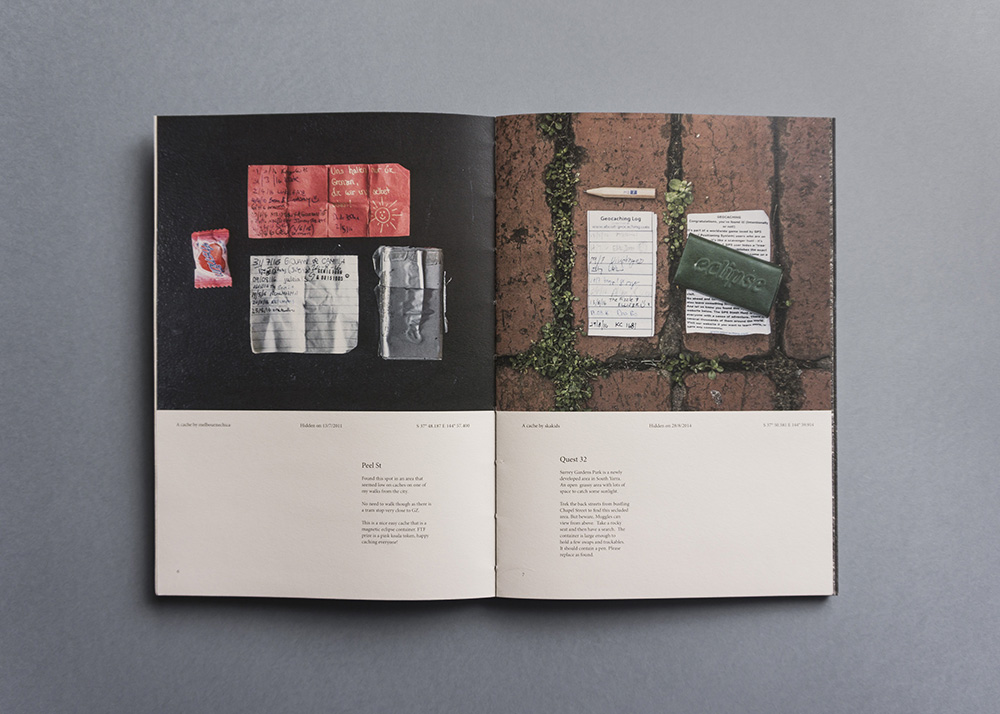
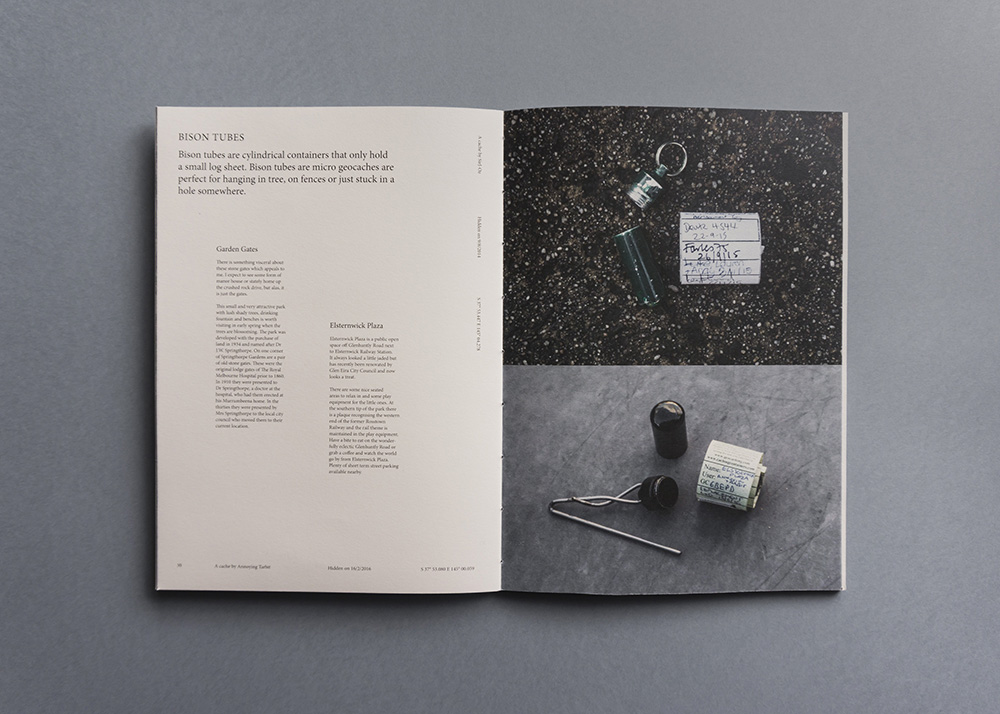

Exploring parts of your city you might otherwise overlook is a wonderful aspect of geocaching. The textures I encountered were almost as important as the caches themselves.



A4, coptic stitch, laser etched cover, original photography